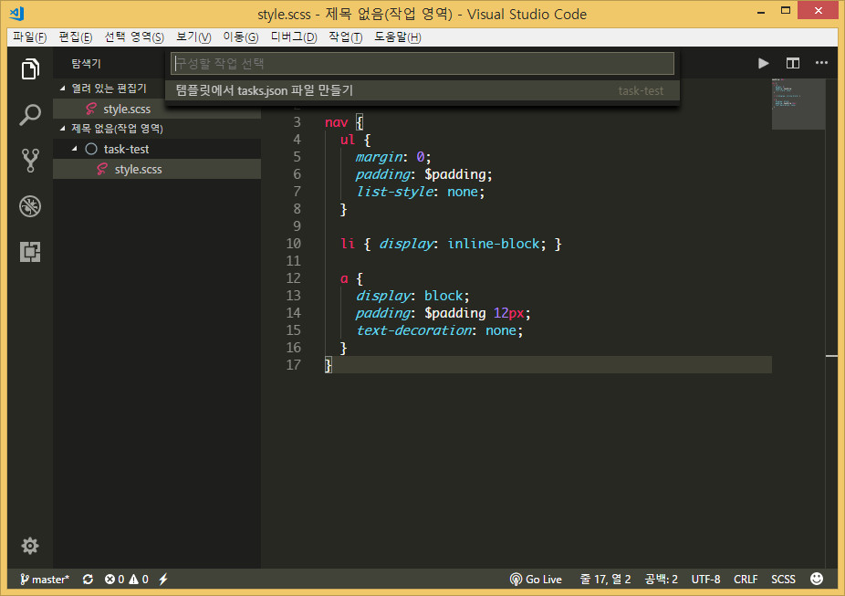
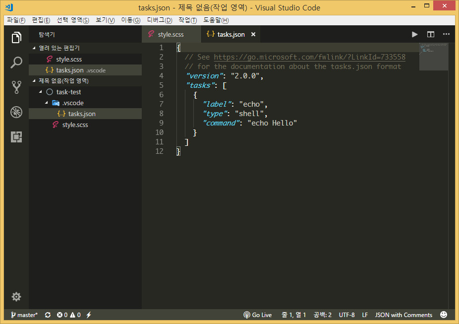
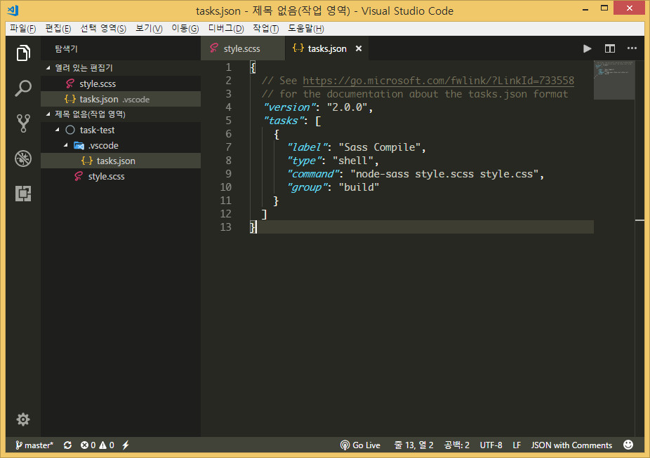
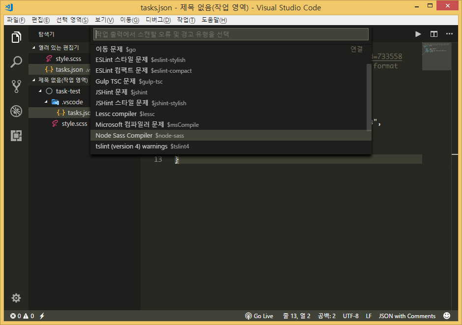
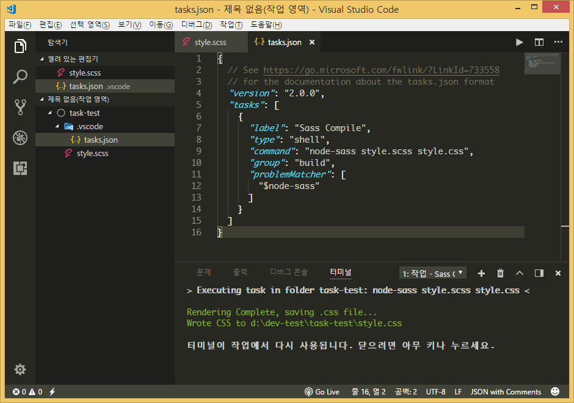
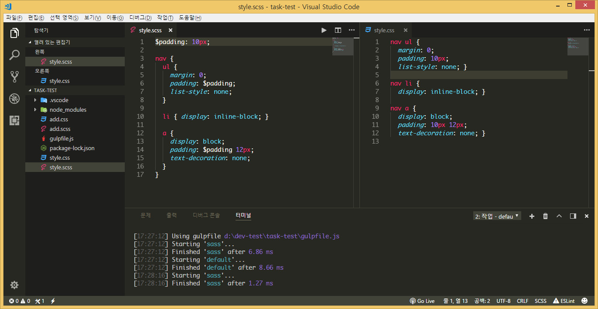

task¶
테스크는 grunt, gulp 등과 같은 작업주자 또는 빌드도구를 말합니다.
vscode 에서는 빌드도구를 에디터 자체내에서 이용할 수 있도록 지원합니다.
타입스크립트 빌드하기¶
타입스크립트는 빌드과정을 거쳐 자바스크립트로 변환해야 사용할 수 있습니다. 따로 빌드도구를 사용하지 않고 vscode 에서 빌드하는 과정을 알려드립니다.
콘솔창에서 아래와 같이 입력합니다.
mkdir task-test # task-test 폴더생성 cd task-test # task-test 폴더로 이동 tsc --init # tsconfig.json 생성 code . # vscode 열기
코드 실행 모습

vscode 열린 모습

이제 HelloWorld.ts 파일을 새로 만듭니다.
구문은 아래와 같이 작성해둡니다.
class Startup { public static main(): number { console.log('Hello World'); return 0; } } Startup.main();
이제 빌드를 해봅니다. 빌드단축키는 ctrl+shift+b 입니다.
tsc 빌드 를 선택합니다.

빌드가 되어 HelloWorld.js 파일이 생성된것이 보입니다.

HelloWorld.js 를 열어보면 빌드가 되서 자바스립트 구문으로 된것이 보입니다.

작업 자동 감지¶
vscode 는 작업주자를 자동으로 감지하고 실행할 수 있습니다.
아래처럼 작업주자가 있어도 ctrl+shift+b 를 클릭하면 작업주자가 나옵니다.

sass 파일 컴파일하기¶
sass 파일을 컴파일하여 css 파일로 만들수 있습니다.
먼저 sass 파일을 컴파일하려면 nodejs 가 설치되어 있어야하며, sass 파일을 컴파일하려면 node-sass 를 설치해야합니다.
아래처럼 콘솔창에 입력하세요.
npm install -g node-sass
아래처럼 간단한 sass 파일이 있다고 가정 합니다.

빌드 단축키인 ctrl+shift+b 를 클릭하면 아래처럼 작업구성이 되어 있지 않다고 나옵니다.
빌드 작업 구성을 클릭합니다.

템플릿에서 tasks.json 파일만들기를 선택합니다.

Others 임의의 외부 명령을 실행하는 예를 선택합니다.

그럼 .vscode 라는 폴더가 생성되고 그 안에 tasks.json 파일이 만들어집니다.

구문을 아래처럼 변경합니다.

환경구성을 했으니 빌드 단축키인 ctrl+shift+b 를 누릅니다.

Node Sass Compiler 를 선택합니다.

컴파일이 된 모습이 나타납니다.

style.css 파일을 열어보면 컴파일된 모습이 나옵니다.

위에서 명령어인 node-sass style.scss style.css 는 node-sass 의 명령어입니다.
터미널에서 직접 명령어를 입력해도 동일하게 빌드됩니다.
node-sass 홈페이지 에 보면 각종 옵션이 나와있습니다.
sass 컴파일 자동화하기¶
자동화하기 위해서 작업주자인 gulp 를 사용해보겠습니다. 그러기위해서는 gulp 와 일부 플러그인을 설치해야합니다.
npm install -g gulp # 위의 과정을 거쳤다면 안해도 됩니다. npm install gulp gulp-sass # 현재 폴더 위치에서 실행합니다.
gulpfile.js 를 만들고 아래와 같이 작성합니다.

// Sass configuration var gulp = require('gulp'); var sass = require('gulp-sass'); gulp.task('sass', function() { gulp.src('*.scss') .pipe(sass()) .pipe(gulp.dest(function(f) { return f.base; })) }); gulp.task('default', ['sass'], function() { gulp.watch('*.scss', ['sass']); })
여기선 간단히 말하면 gulp.task('sass, ... 은 작업이름이 sass 이고, gulp.task('default, [sass], ... 은 작업이름이 default 입니다.
gulp.task('default', ['sass'], function() { gulp.watch('*.scss', ['sass']); })
에서 gulp.watch() 는 실시간으로 sass 파일을 감시하는 구문입니다.
빌드작업의 단축키인 ctrl+shift+b 를 클릭하면 아래처럼 Sass Compile 가 나옵니다.

작업 - 작업실행을 클릭합니다.

gulp: default 를 선택합니다.

작업 출력을 스캔하지 않고 계속을 선택합니다.

작업이 실행되는 모습이 보입니다.

위에서 언급했던 실시간 감지기능을 알아보기 위해 vscode 에서 두 파일을 열었습니다.

sass 파일을 수정하면 css 파일도 같이 수정이 되는것을 볼 수 있습니다.

자바스크립트, SASS, LESS, Markdown, TypeScript .... 등등 컴파일하는 방법은 홈페이지를 참고하길 바랍니다.
https://code.visualstudio.com/docs/languages/overview